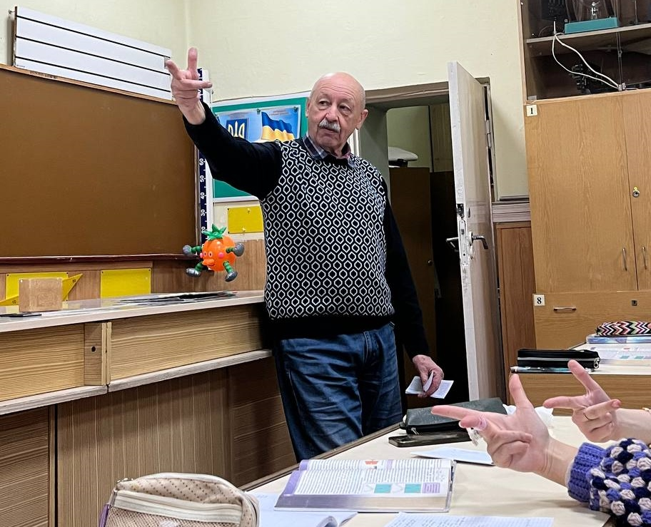
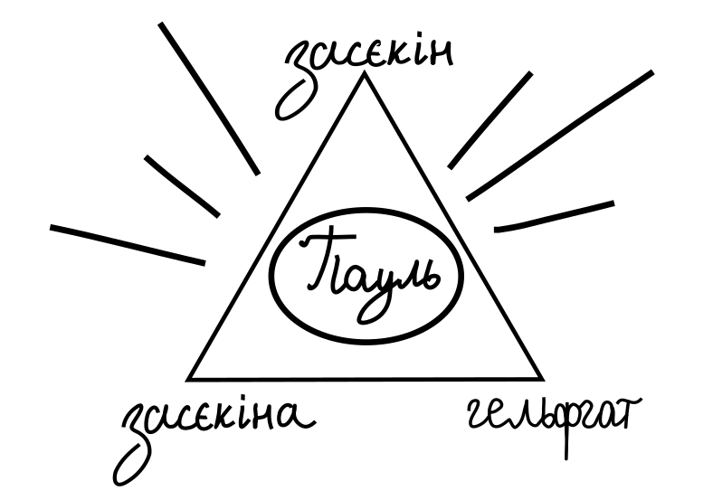
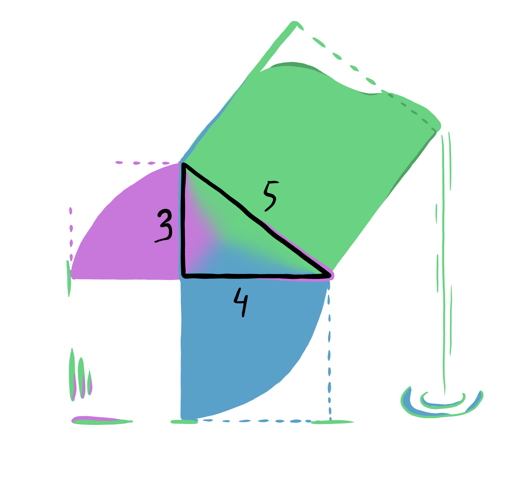

Для розуміння деяких моментів варто зазначити:
ЮК – Галицька Юлія Карлівна, вчитель англійської мови
ПФ – Пшенічка Пауль Францович, вчитель фізики (до речі, заслужений вчитель України)
НЛ – Кінащук Наталія Леонідівна, вчитель математики і директор ліцею
В 7 класі як перейшли в ліцей №1 міста Чернівці математичного та економічного профілів, у
нас почалися пари на 8 ранку, оцінки 3-4 бали (з 12) і це ще треба постаратися. Звісно, були і 12,
але далеко не завжди. Релігія створювалася роками, та все почалося з цього моменту. Хоча, фото ЮК у формі ікони вже існували в ліцеї і до нас.
І на фоні цього з ЮК, яка веде англійську на рівні десь В2 (суб’єктивна думка більшості, а як відомо democracy is the dictatorship of the majority),
коли частина учнів перейшли до ліцею взагалі не знаючи мови. Частина взагалі не розуміли ні слова з того що ЮК говорила англійською
(а це було майже все) перший час. Все почалося з тої англійської. Одного дня ми повинні були вивчити скоромовку she sells sea shells at the sea shore,
the shells that she sells are sea shells, I'm sure
. Їх було з десяток, але ця була першою. І вона стала молитвою.
Потім одного дня коли ми були одинадцятим б, а помаранчевий помідор дивився на кожного учня у класі… ПФ серед решти своїх жартів показав дещо і запитав нас що це таке:

Звісно, ніхто не здогадався, що це "дуля розкладена по осям координат". Але тепер ми хрестимося цією штукою.
Коротка історія трикутника
(одного зі всіх трикутників)
Коли вчили пам’ятки до нмт з історії треба було якось запам’ятовувати їх всі.
Тож, було вирішено перед сном робити такий трикутник (що власне я навіть кілька разів робила).
А перед сном тому, що трикутник символізував Успенський собор Почаївської лаври (рисунок). До того ж,
трикутник можна вважати варіацією жесту складених рук для молитви, але розгорнутих у геометричну фігуру.


Зліва направо:
Пшеничка Наталія, Фратавчан Вікторія, Пшенічка Пауль Францович, Пшеничка Поліна, Луник Катерина,
Іванова Катерина, Кінащук Наталія Леонідівна, Іваненко Анастасія, Андрущак Анна
Ще одна не менш важлива частина релігії: масонство. Тут особливо без пояснень,
просто Засєкін, Засєкіні, Гельфгат (це, до речі, троє авторів “конкуруючих” підручників з фізики)… Пауль.

Висновок
(одна з найважливіших частин зі всього вказаного раніше)
Релігія Піфагоріанізму заснована на вірі у цілі числа. Вони керують світом.
Математика може пояснити світ. Один з релігійних символів: прямокутний трикутник зі сторонами 3, 4 та 5.
Математика є правильною за визначенням, бо люди самі придумали аксіоми і будують все на них.
Тобто жодні відкриття чи дослідження не можуть бути такими, що суперечать математиці, бо математика не базується на реальному матеріальному світі.
Число три є важливим у багатьох аспектах релігії, хоча інші числа теж вітаються.
І останнє.
Дякую за те, що дочитали до кінця!
